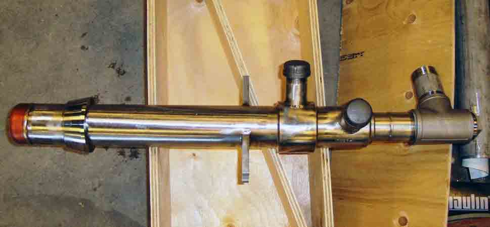

EAF Chemical “Energy Solution” for operations that are predominately:
- High proportion of hot metal in charge
- Flat bath (large proportion of DRI/HBI, CONSTEEL, Shaft Furnaces)
- No need for gaseous fuel
- Reduces EAF operation cost
ALARC-Jet is a specially designed supersonic nozzle generating a focused stream of oxygen that maintains its supersonic velocity for more that 2 meters without using a flame shroud.
This allows to generate the benefits of conventional sidewall flame-shrouded injectors without the need for gaseous fuel, thus reducing the operational cost of EAF operations where predominate flat bath conditions eliminate the need for a burner function.
ALARC-Jet is mounted in a water cooled copper panel that is equipped with a carbon injector located close to the slag line to provide superior carbon injection efficiency.
Process control solutions include PLC and HMI programming for fully automated injection of oxygen and carbon
The ALARC-Jet nozzle is best adapted for Flat Bath operations such as:
- Large Proportion of DRI/HBI
- Continuous Charged Furnaces
- High Proportion of Hot Metal